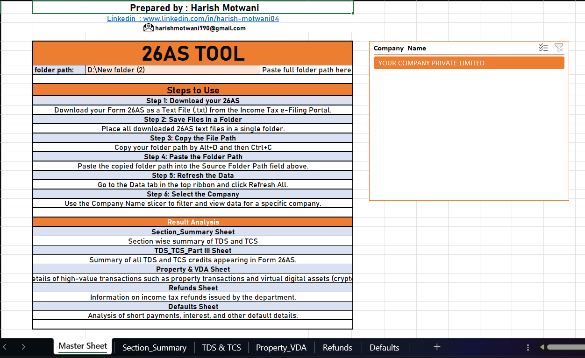
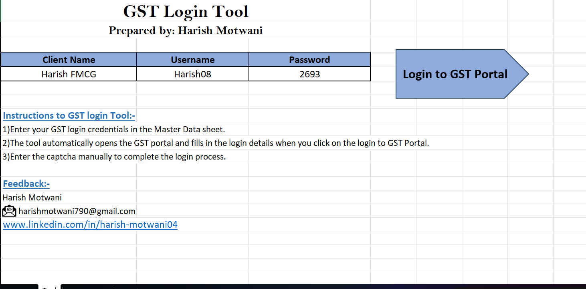
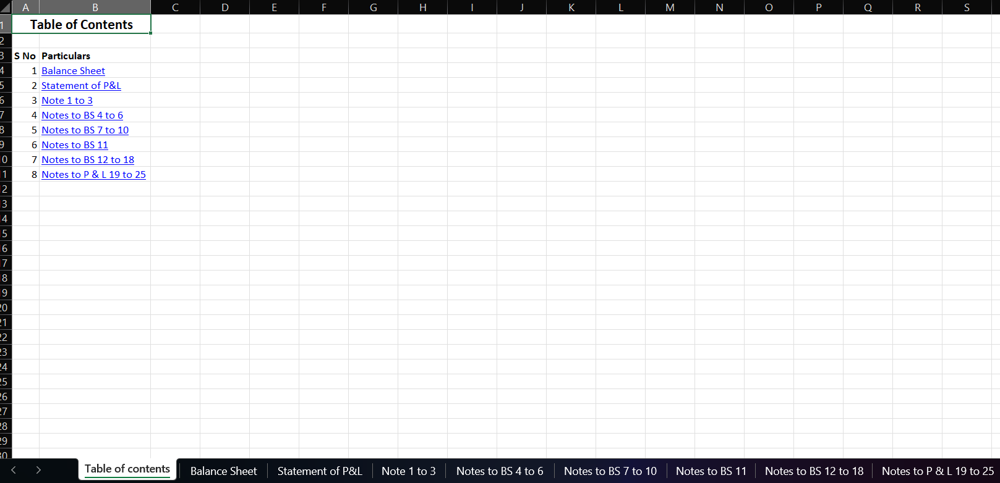

CA Finalist specializing in workflow automation, data analytics, and building modern tools for modern professionals.
As a CA Finalist currently pursuing my articleship at Bamb Taori & Co., I have hands-on experience with statutory audits, concurrent audits, and tax compliance. However, I realized early on that the future of accounting lies in automation.
I have experience using programming and data visualization to eliminate repetitive tasks. My goal is to build intelligent workflows that allow finance professionals to focus on analysis rather than data entry.
Custom scripts and automation tools I have built to streamline daily tax and audit workflows.

Processes and consolidates complex Form 26AS data into a clean, readable dashboard for instant client analysis.
Download Tool
An automated tool designed to bypass manual repetitive logins on the GST portal, saving hours during peak filing seasons.
Download Tool
A VBA macro that instantly generates a dynamic, clickable Table of Contents, linking to every sheet in large financial workbooks.
Download ScriptMy published article discussing the automation imperative, using Python to move beyond sample testing, and why AI is a force multiplier for CAs.
A beginner-friendly guide for CA students on connecting financial trial balances directly to interactive visualization models.
An exploration of why Python and VBA are becoming essential tools for modern CAs to overcome the limitations of traditional spreadsheets.
Whether you need custom automation solutions for your firm, want to discuss tech in accounting, or just want to network, my inbox is always open.